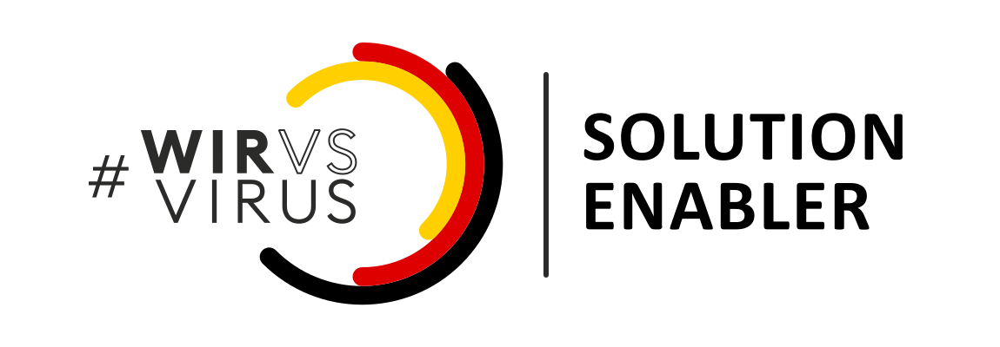
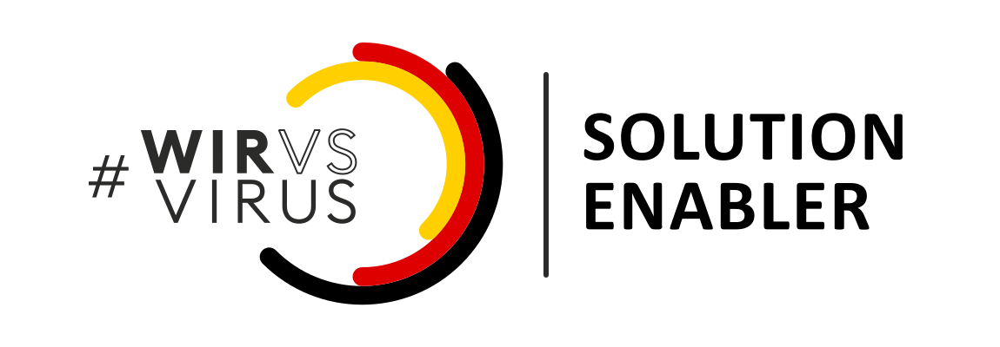

Aktuelles
Entwicklung einer iOS und Android App von "Darf ich raus"
12. April
Eine gesamtheitliche Lösung besteht nicht nur aus einer Web Applikation, sondern auch aus mobilen
Apps. Zurzeit wird mit Nachdruck an einer Applikation für sowohl Android als auch iOS gearbeitet. Hier
sollen der Feed als auch die Karte dem mobilen Nutzer schnell und einfach Informationen vermitteln.
 Erfolgreiche Bewerbung beim Solution Enabler Programm
07. April 2020
Durch die erzielten Fortschritte gelingt nun auch die erfolgreiche Bewerbung für die nächste Stufe
im "Wir vs. Virus" Hackathon: das Solution Enabler Programm. Hier stehen den Teams diverse Experten und
Paten zur Verfügung, um die Entwicklung der Projekte und Lösungen zu ermöglichen.

Teilnahme am Wir vs. Virus Hackathon
22. März 2020
Nach der Teilname am von der Bundesregierung aufgestellten Hackathon beschließt das Kernteam, an
der
Erstellung einer Kriseninformationsplattform weiterzuarbeiten. In den kommenden Wochen wird nun die Webseite
verbessert und ein robusteres Backend geschaffen.
Erfolgreiche Bewerbung beim Solution Enabler Programm
07. April 2020
Durch die erzielten Fortschritte gelingt nun auch die erfolgreiche Bewerbung für die nächste Stufe
im "Wir vs. Virus" Hackathon: das Solution Enabler Programm. Hier stehen den Teams diverse Experten und
Paten zur Verfügung, um die Entwicklung der Projekte und Lösungen zu ermöglichen.

Teilnahme am Wir vs. Virus Hackathon
22. März 2020
Nach der Teilname am von der Bundesregierung aufgestellten Hackathon beschließt das Kernteam, an
der
Erstellung einer Kriseninformationsplattform weiterzuarbeiten. In den kommenden Wochen wird nun die Webseite
verbessert und ein robusteres Backend geschaffen.